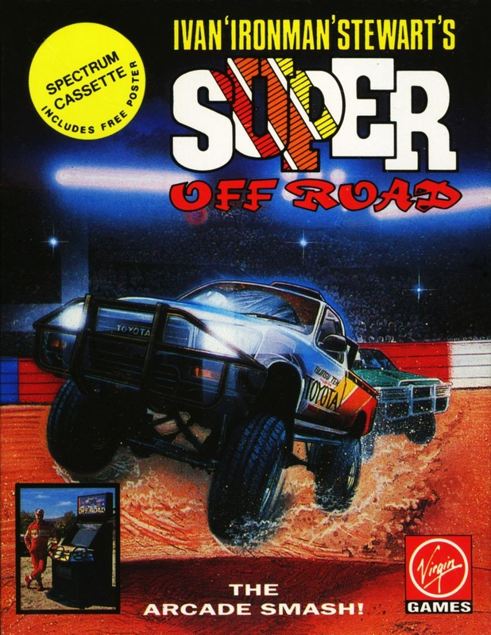
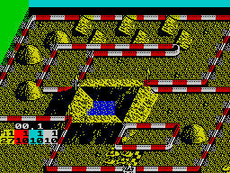

Super Off-Road


{kind=link}

| Publisher: | Virgin Games |
| Price: | £9.99 / £14.99 |
| Year: | 1990 |
| Source: | CRASH, Issue 82 |

Super Sprint style games have been around for a long while, and the newest addition is certainly a corker. Super Off Road in the arcade is a three player no holds barred game where you race around eight barren and pot holed tracks trying to beat your mates to the finish line. On the computer the aim is the same, but there can only be two human players (the other two are computer controlled).
When you’ve set the game controls it’s straight into the first race, with all participants, both human and computer, beginning the season on equal par (ie with no dosh). The idea is to complete each race in as high a position as possible and thus earn loadsadosh.

Each race consists of four laps, and if jostling with three rival drivers isn’t bad enough the state of the tracks is terrible. Huge mounds of earth, pot holes and watery obstacles stand in the way, but you do have some help. You start the game with 25 nitros: press the fire button and hold onto your crash helmet — and keep your eyes peeled because extras can be collected from the track. At the end of each race the prize money is distributed and you’re sent to the spare parts shop to improve your 4x4.
It’s then onto the next race to win the fame and glory that you deserve, plus a lot of money on the way.
All the coin-op’s addictive gameplay has certainly been transferred to the Speccy conversion, and as always the best way to play is against a friend. Graphically the game is great with small but nicely detailed and fast moving car sprites. The backgrounds are also detailed and certainly cause headaches, especially when an opponent is on your tail and you end up at the bottom of a water filled hole! Full marks to programming team Graftgold for producing such a frustratingly playable game.
This is a racing game with a difference. You view proceedings from high up in the air, and the animation used on all the cars is out of this world! As each car goes over bumps and ramps on the track it tilts up and down and jumps very realistically. Each track is packed full of seemingly impossible obstacles for you to get around. Grills, water pits, domes in the road, they’re all there to try and stop you finishing first. Racing against another three computer players gives the game a feeling of excitement as you attempt to get over the line first. Super Off Road Racer is a great game, full of road wrecking fun.
NICK — 88%
RATING
Wild race-’em-up with more action than a bag full a’ ferrets!
| Presentation: | 88% |
| Graphics: | 90% |
| Sound: | 80% |
| Playability: | 86% |
| Addictivity: | 88% |
| Overall: | 90% |